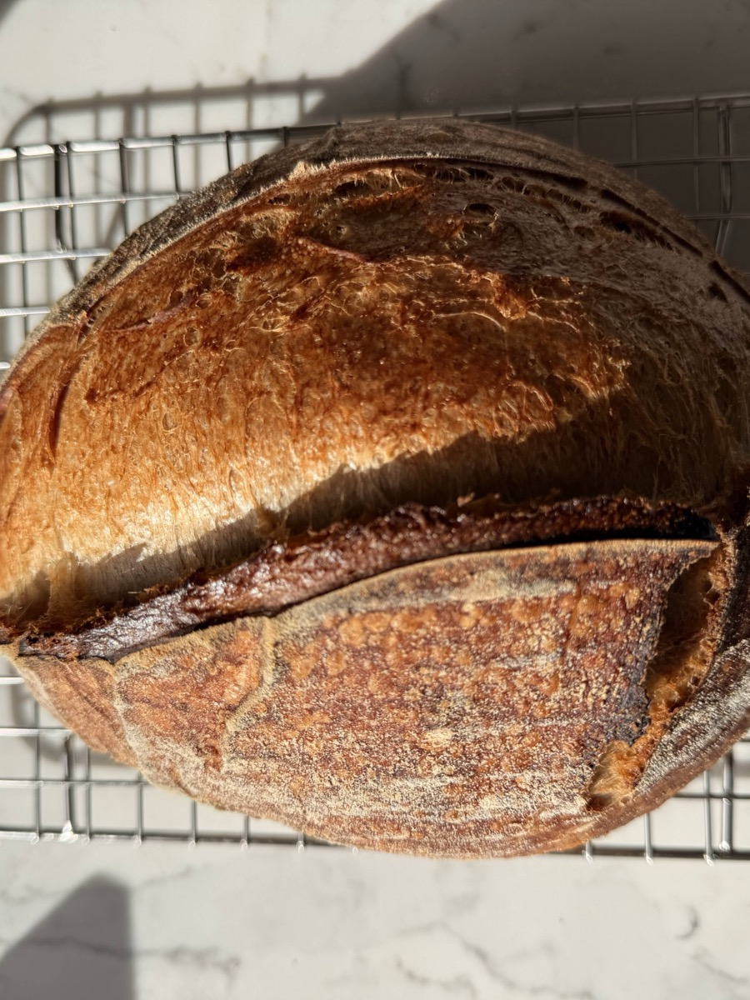
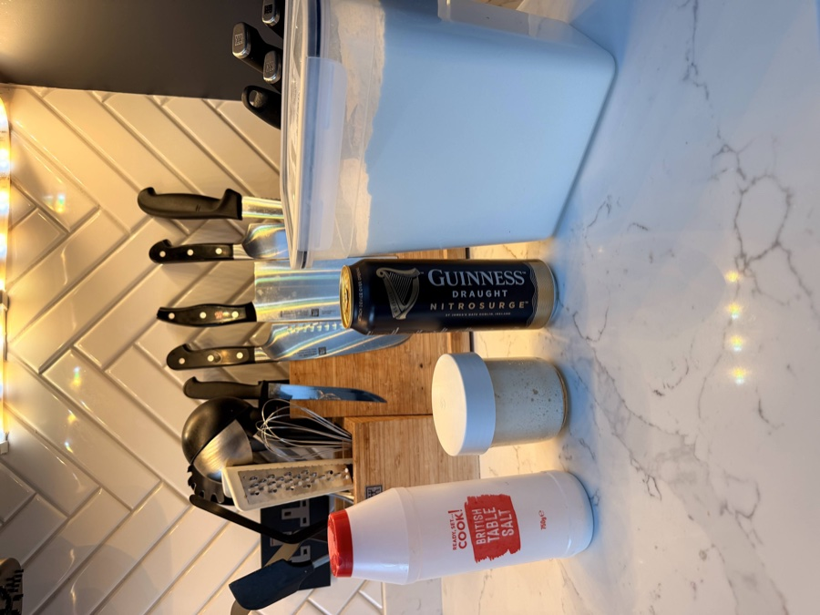
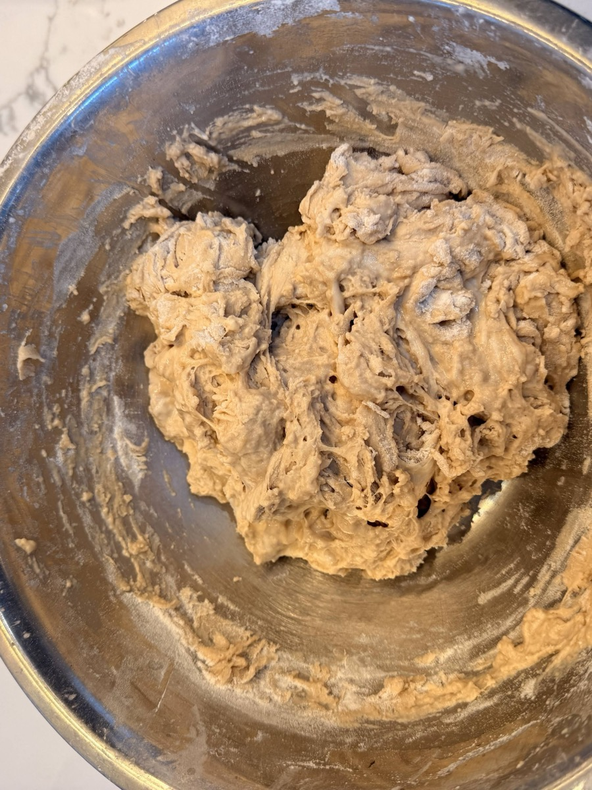
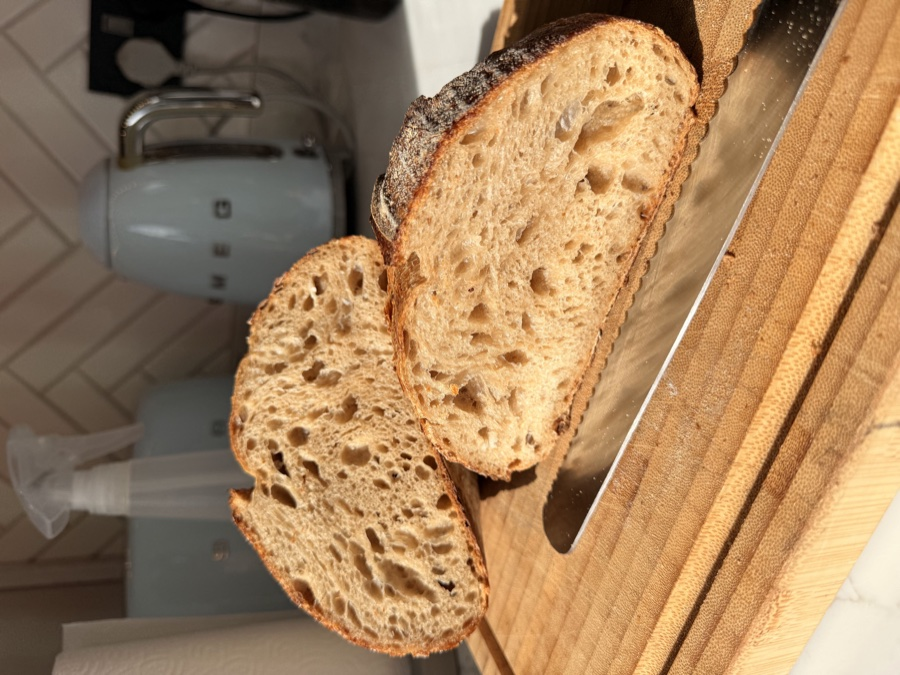

Guinness Sourdough Bread - The Same Recipe, One Simple Swap
Once the classic loaf feels comfortable, you start wondering what happens if you change something. This is that experiment. Replace the water with Guinness - same weight, no other adjustments - and you get a darker crumb, a deeper flavour, and a nuttier finish. The method is identical, the timing is the same, and the results are quietly impressive.

Ingredients (for 1 Loaf)

- 100-125g active sourdough starter (anywhere in this range works)
- 180g Guinness Draught, at room temperature (roughly half a standard 440ml can)
- 280g strong white bread flour
- 5g fine sea salt
Method (Same 2-Day Process)
The method here is exactly the same as the classic recipe. The only difference is Guinness where water used to be. If you want video guides for stretch and folds, shaping, or scoring, they're all on the main recipe page.
Quick Overview
-
Day 1 AM:
Mix shaggy dough with Guinness, rest briefly, quick final mix.
-
Day 1 Afternoon/Evening:
Long bulk ferment (6+ hrs at room temp, mostly hands-off). Shape dough.
-
Day 1 Evening:
Short counter proof (2-3 hrs).
-
Day 1 Night → Day 2:
Cold proof in fridge (8-24+ hrs).
-
Day 2 Bake Time:
Preheat oven & Dutch oven. Score cold dough. Bake lid on, then lid off. Cool completely.
Day 1: Mixing & Proofing
-
Combine Ingredients (Morning): In a large bowl, combine your 100-125g active starter with 180g room-temperature Guinness and mix until the starter is dissolved and the mixture looks cloudy.
Add 5g salt and 280g strong bread flour. Mix until no dry flour remains. Don't be alarmed if the dough looks a bit darker or more tan than usual - that's the Guinness doing its thing, and it's completely normal.

Cover the bowl (cling film, a shower cap, or a plate all work).
- Short Rest & Mix: Let the covered bowl sit for about 10-15 minutes. Then spend just 1 minute using wet hands to fold the dough over itself in the bowl and bring it together. Cover again.
-
Bulk Fermentation: Leave the covered bowl at room temperature until the dough is puffy, airy, and has increased by around 50-75%.
Temperature affects timing: In a warm kitchen (22°C/72°F), bulk fermentation might take 5-6 hours. In a cooler kitchen (18°C/64°F), it could take 8-10 hours.
Stretch & Folds: During the first 3-4 hours, do at least 2 sets of stretch and folds (3-4 sets is better). See the technique guide. Wait 45-60 minutes between sets.
- Shape: Once the dough has risen and looks ready, gently tip it onto a lightly floured surface and shape it into a round (boule) or oval (batard). Handle it gently to keep the air bubbles you've built up. See the shaping guide.
- Counter Proof then Cold Proof: Place the shaped dough seam-side up into a well-floured banneton or bowl. Cover and leave at room temperature for 1-2 hours, then transfer to the fridge for 8-24 hours. The long cold proof works the same way here - bake it when you're ready.
Day 2: Baking
- Preheat Oven & Dutch Oven: Place your Dutch oven (lid on) inside your oven and preheat to 235°C (455°F). Let it sit for at least 30-40 minutes after the oven reaches temperature.
-
Turn Out, Score & Bake: Place a piece of baking parchment over the banneton, flip the dough out onto it, and score the top with a lame or sharp knife. See the scoring technique.
Scoring the Guinness loaf before baking Lower the scored dough into the hot Dutch oven, put the lid on, and bake at 235°C for 25 minutes. Then remove the lid, drop the temperature to 220°C (430°F), and bake for another 20 minutes. Because of the Guinness, the crust may colour a little faster - keep an eye on it in the final minutes and pull it when it's a deep golden brown.
-
Cool Completely: Lift the loaf out using the parchment paper and place it on a wire rack. Let it cool for at least 30-45 minutes before slicing.

The crumb is noticeably darker than a standard white sourdough - that's the Guinness The crumb will be a shade or two darker than your usual loaf. The flavour is deeper and nuttier, with an earthiness that's hard to place at first but keeps you coming back for another slice.
Want to Go Deeper?
If you're experimenting with variations and want a second set of eyes on your process, a coaching session can help you dial things in faster.
Book a 1:1 Coaching Session →